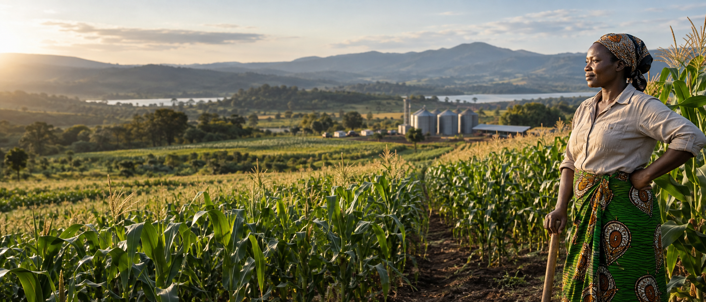

Our vision
To become a leading integrated agribusiness and trusted food distributor in Malawi.

Premium Grains
A modern Malawian agribusiness rooted in production, dependable markets and stronger livelihoods.
Who we are
Premium Grains Ltd works with farmers, cooperatives, buyers and partners to strengthen supply, improve quality and create sustainable income across agricultural value chains.
Our purpose is to grow a resilient food and commodity business that gives farmers practical support, dependable markets and opportunities to earn and thrive.
To become a leading integrated agribusiness and trusted food distributor in Malawi.
To empower farmers through production support, extension, value addition and structured market access.
Integrity, excellence, sustainability, innovation, accountability, partnership and community empowerment.
Integrated agribusiness
Commercial discipline and farmer development, working as one connected cycle.
Demonstration farming, climate-smart practices and crop planning at our farm hubs.
Inputs, extension, training, farmer organisation and financial empowerment.
Quality control, bulking and coordinated collection from farmers and cooperatives.
Reliable market access through our commercial buyer and distribution network.
Value addition, stronger household income and reinvestment into the next cycle.
Projects in motion
SAFFEI is one Premium Grains project.
Our projects connect agricultural production with financial resilience, practical capability, dependable markets and stronger livelihoods.
Climate-smart practices, soil health, manure, demonstration plots and responsible land use.
Village Savings and Loan Associations, savings culture, budgeting and business-minded production.
Lead farmers, practical extension, group learning and stronger cooperative organisation.
Aggregation and off-take that connect farmer effort to real commercial demand.
Where the model comes alive
Kasiya and Mpherembe anchor production, demonstration, farmer learning and partnership activation.
Demonstration + learning
Farmer network + scale
Built for collaboration
We offer a practical bridge between community-level implementation and commercial agricultural demand.
Start a conversationSourcing, aggregation, off-take and distribution.
Two hubs that make training and demonstration practical.
Organised groups, lead farmers, savings and extension.
Stronger food security, livelihoods and reliable supply.